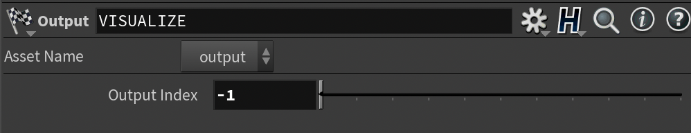
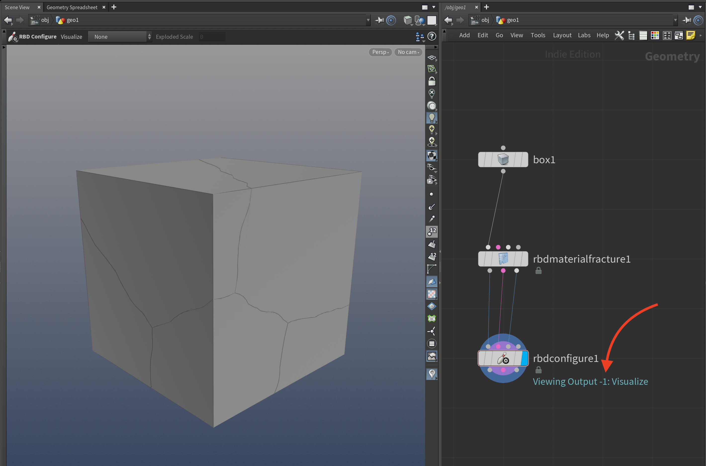
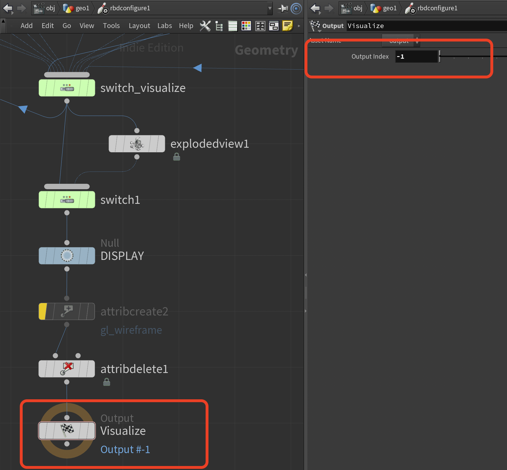
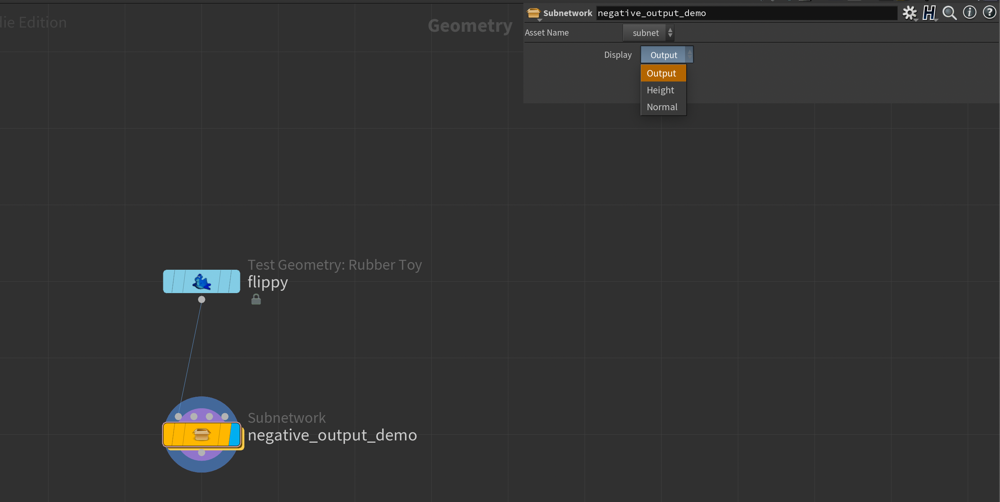
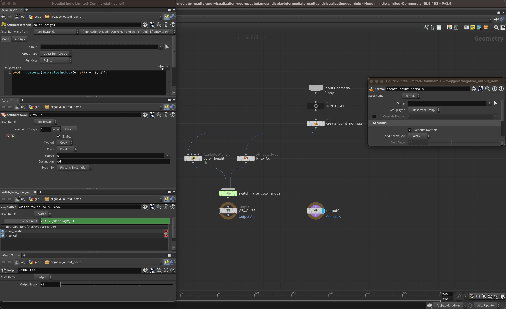
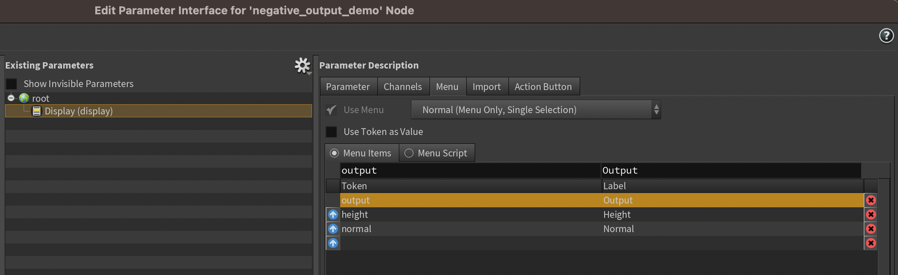
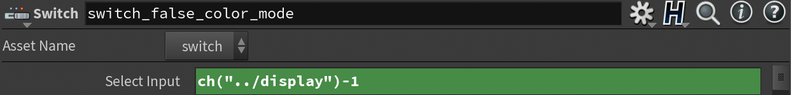

One thing I didn’t realize until after I posted the last blog post/video is that you can actually add an output with a negative index! This output won’t show up as a port on the node.

Negative Output Index
We can see this on the RBD Configure SOP. When we hit Enter in the viewport to enter the node’s Viewer State, we are switched to viewing the -1 output.

RBD Configure Negative Output

RBD Configure Contents
We can’t actually hook up to this output in the network editor, which could make this an excellent option since it causes less clutter!
Let‚Äôs implement something similar ourselves. We’ll create a setup that takes some input geo and adds some point normals to it. It will have a couple of false-color visualization modes: Height and Normal.
When we switch our Display menu, if we select anything except the “final result” of the node let’s switch to showing the -1 output in the viewport (which will only be outputting the visualization geo).
Open the hipfile and see the attached setup (or copy it from the screenshots):

Example Overview

Example Contents
Create an Ordered Menu Parameter called display with the following token/value pairs:

Menu Tokens
Don’t forget to link it up to your visualizer switch!

Switch (minus one)
We subtract 1 since we’re using index 0 of the menu to select our actual output geo, and if we didn’t subtract 1 our switch would be off by one.
Add a callback to the menu parameter that will switch to the -1 output
whenever we select one of the visualizer options.